Contraception
- Always quote TYPICAL use failure rates, never perfect use. Per 1,000 women in the first year: no method 850 · condoms 180 · pill, patch and ring 90 · Depo 60 · copper IUD 8 · hormonal IUS 2 · implant and vasectomy 0.5.
- LARCs (IUD, IUS, implant) are the most effective and the most continued — over 80% still using them at 3 years vs about 50% for the pill, patch, ring and Depo. Given free choice and good counselling, most people pick one (the CHOICE project).
- The main mechanism is almost always the progestin (thick cervical mucus, suppressed ovulation). In combined methods the estrogen is mostly there to control nuisance bleeding.
- Estrogen is the part with the contraindications: smoking >15/day over 35, uncontrolled hypertension, DVT/PE, migraine with aura, stroke or ischemic heart disease, lupus with antiphospholipid antibodies, current breast cancer. Progestin-only methods and IUDs are usually still fine.
- Emergency contraception: the copper IUD is the most effective and works up to 7 days. Then ulipristal (Ella, up to 5 days, works during the LH rise), then levonorgestrel (Plan B, best within 72 h, useless once the LH rise starts).
Learning Objectives
- List contraceptive options and their failure rates.
- Counsel regarding the most effective contraceptive methods.
- Understand the mechanism of action of contraceptive options.
- Discuss emergency contraception options.
- Apply new knowledge to clinical case scenarios.
Dr. Stephanie Black, whose fellowship was in family planning. Disclosure given in the lecture: she has had a financial arrangement with Bayer, which makes the hormonal IUDs (Mirena and Kyleena); there are no competitor products. The drugs themselves are covered in 4.4.
Why This Conversation Matters
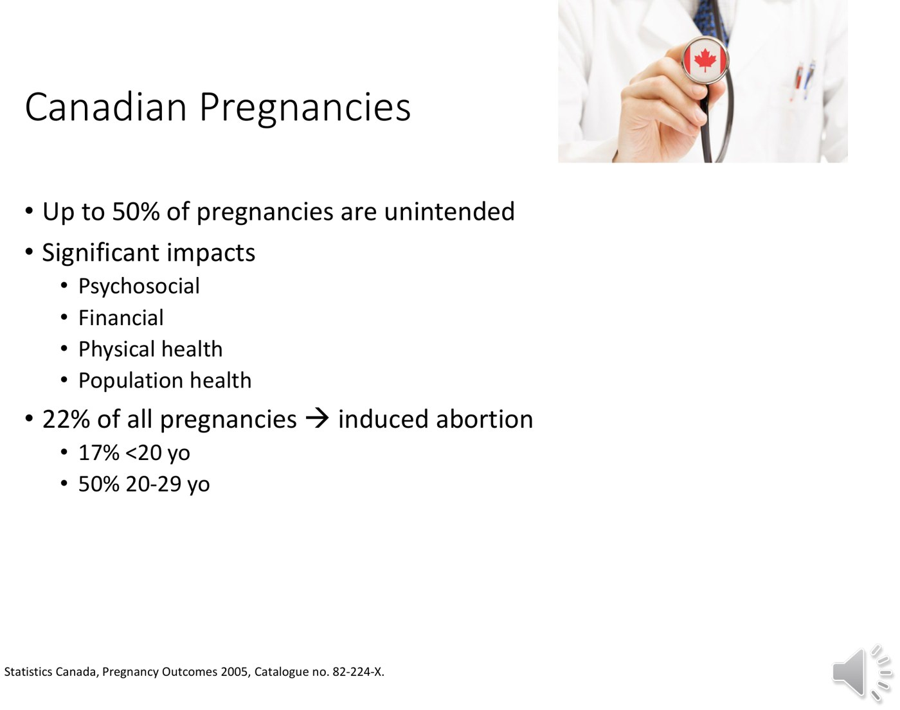
Up to half of pregnancies are unintended (not necessarily unwanted, but unplanned). 22% of all pregnancies end in induced abortion, and half of those are in people aged 20–29.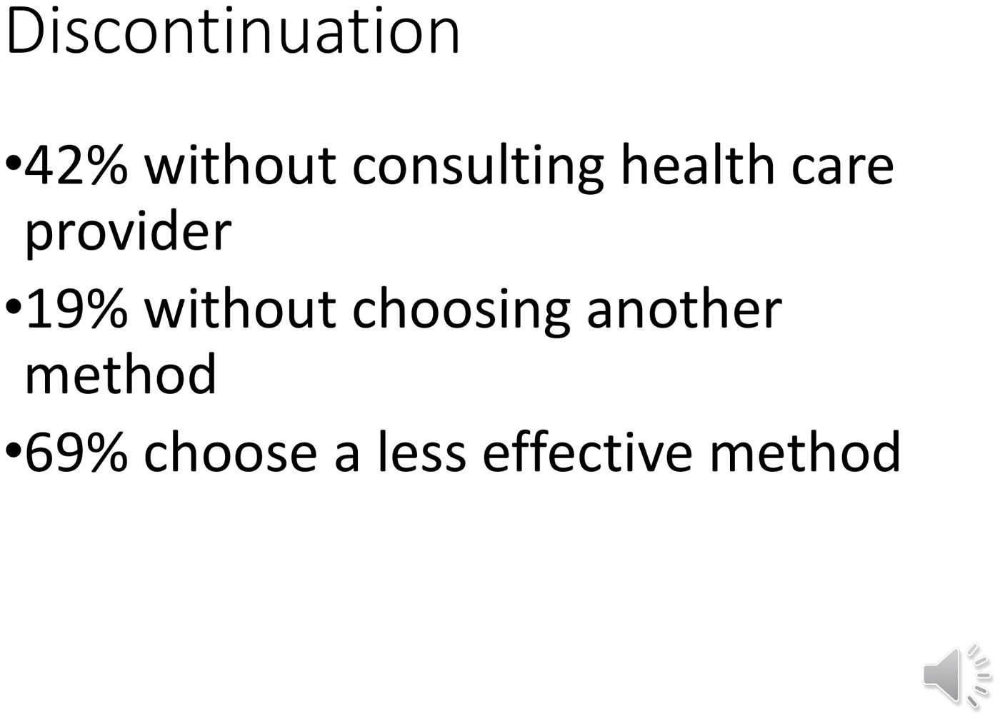
People stop methods without telling us. 42% stop without consulting anyone, 19% stop with no replacement, and 69% of those switching move to something less effective. That's why you ask about contraception often, not once.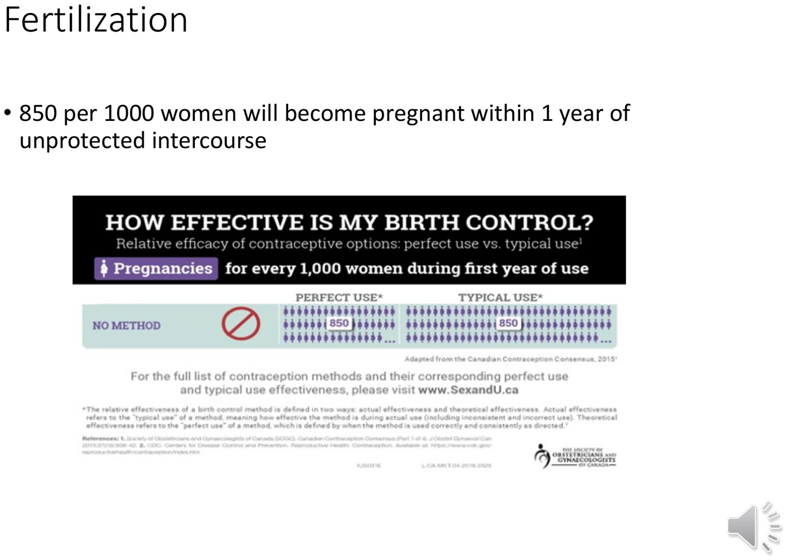
The baseline: 850 per 1,000 become pregnant within a year with no method. Also worth knowing: about 1,200 days in a reproductive lifetime when fertilization is possible.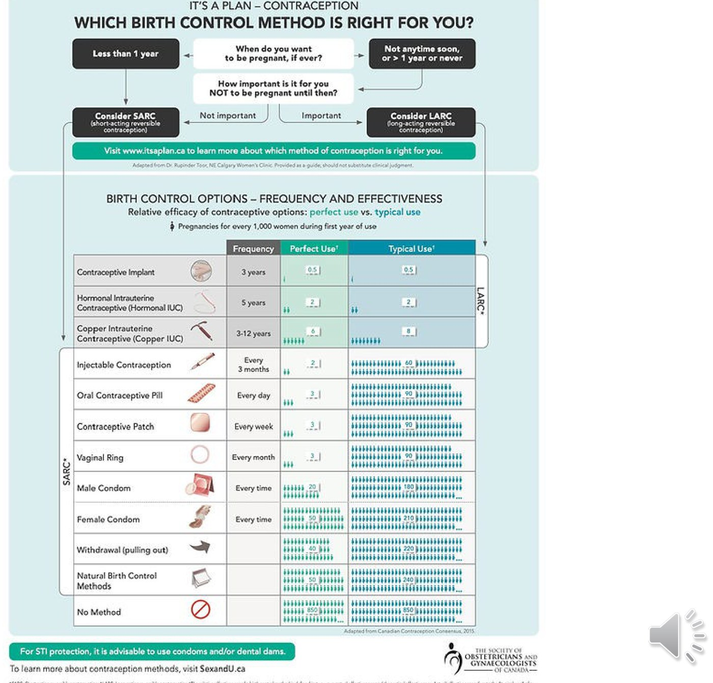
The chart to know. Ranked by effectiveness, with perfect use (middle) and typical use (right). Counsel from the typical-use column: patients use methods typically, not perfectly. SOGC, from the lecture.Natural, Barrier & Permanent Methods
The least effective, the most used, and the irreversible.
Natural Family Planning
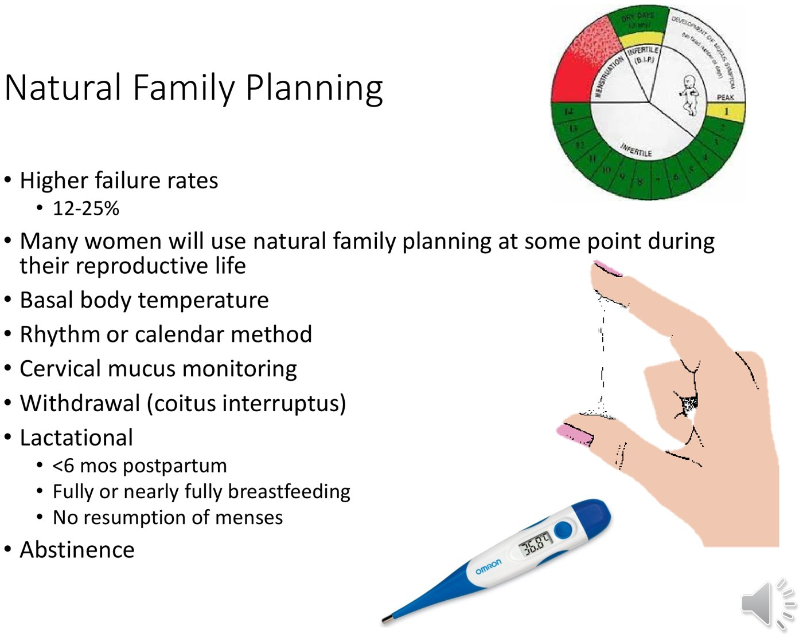
Failure 12–25%, but worth knowing: it may be the only acceptable method for some patients, and it beats no method at all.| Method | How it works, and the catch |
|---|---|
| Basal body temperature | Thermometer at the bedside, taken before getting out of bed. A rise of 0.2–0.5°C marks the LH surge and ovulation. The catch: by the time it rises, ovulation has already happened |
| Rhythm / calendar | Needs a genuinely predictable cycle and a 14-day luteal phase; requires avoiding intercourse for many days |
| Cervical mucus | Clear, stretchy mucus that doesn't break between finger and thumb (spinnbarkeit) means the LH surge. Same catch as temperature |
| Withdrawal | Sperm can be present in pre-ejaculate, and timing errors are common |
| Lactational amenorrhea | Needs all of: <6 months postpartum, fully or nearly fully breastfeeding with no gaps over 4 hours, and no return of menses. The catch: menses returning means she already ovulated — you can miss the boat |
Barrier Methods
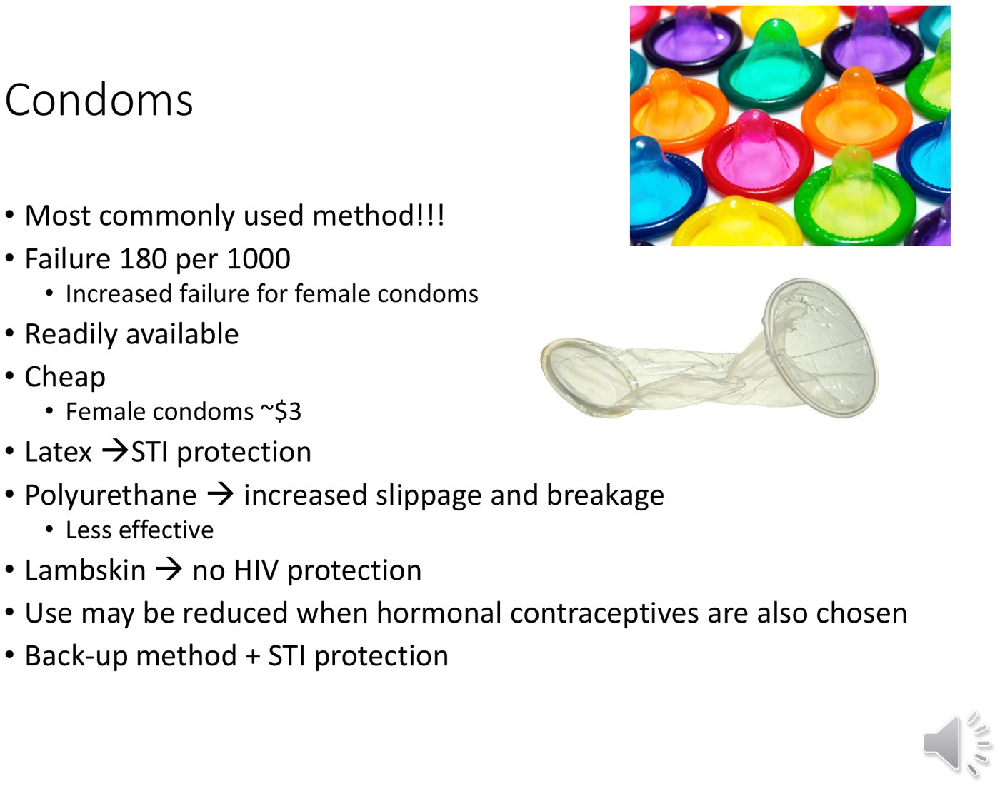
The most commonly used method worldwide, and the only one that also prevents STIs. Typical-use failure 180 per 1,000 (18%) vs 2% perfect use.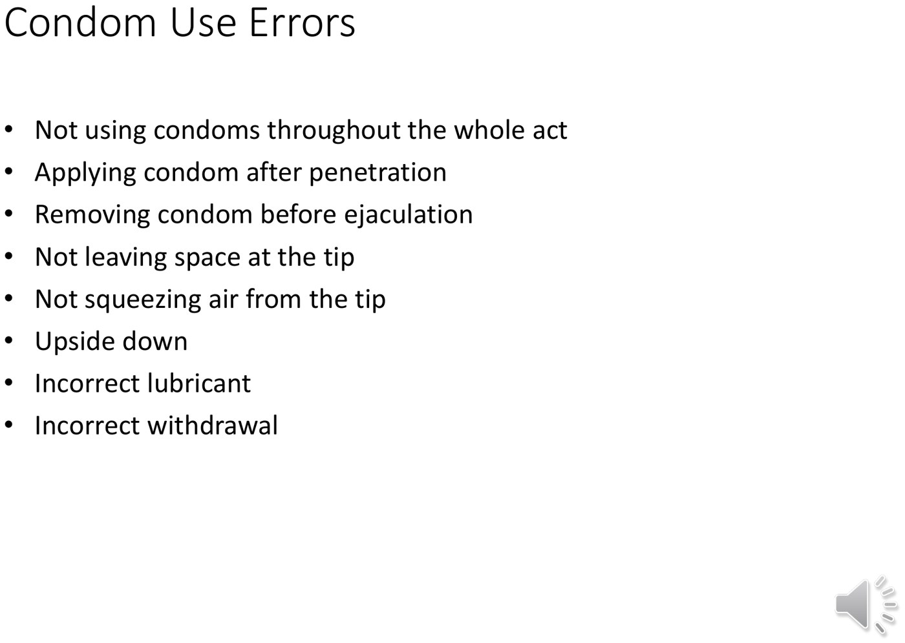
Why the typical-use rate is so much worse. Note "removing the condom before ejaculation": done without the partner's knowledge, this is stealthing, a form of reproductive coercion. Oil-based lubricant breaks down latex.- Material matters: latex protects against STIs; polyurethane slips and breaks more; lambskin gives no HIV protection and limited STI protection (it's porous).
- Nonoxynol-9 is not recommended. No added effectiveness, and it damages vaginal epithelium, increasing HIV transmission.
- Condom use drops when a hormonal method is added, so counsel that condoms are for STIs as well as pregnancy.
- Fit is a real barrier, and a solvable one. Standard condoms vary by only a couple of centimetres; companies like TheyFit/myONE ship 60 sizes to Canada with a printable sizer, so "they don't fit" is not a reason to go without.
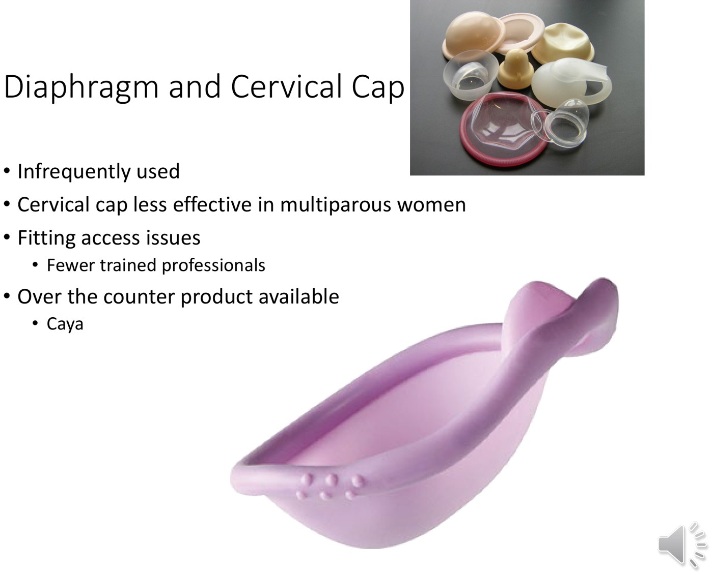
Permanent Contraception
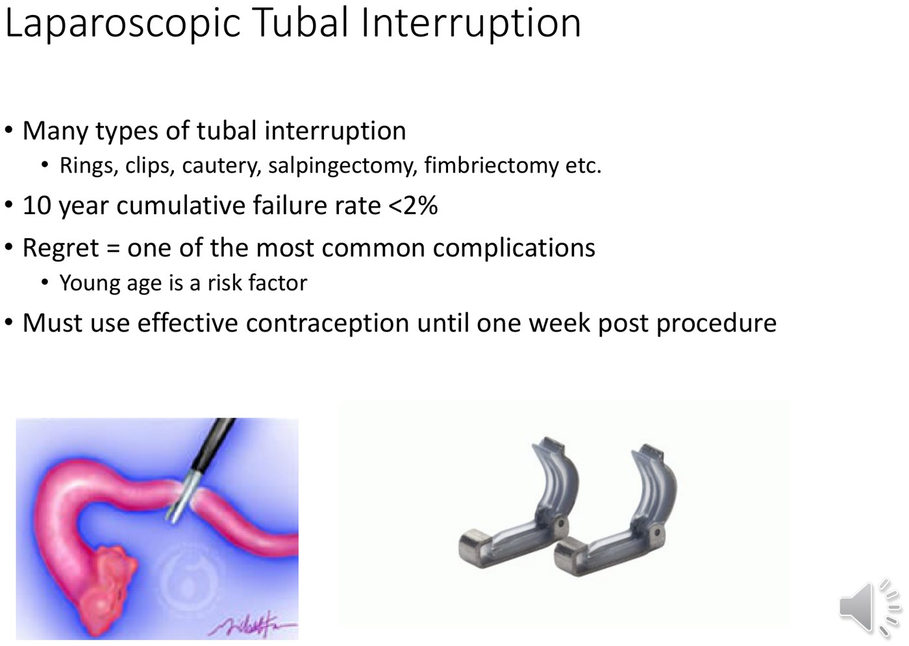
Tubal interruption: rings, clips, cautery, salpingectomy or fimbriectomy. Ten-year failure <2%. Use contraception for a week afterwards: an ovum may already be in transit.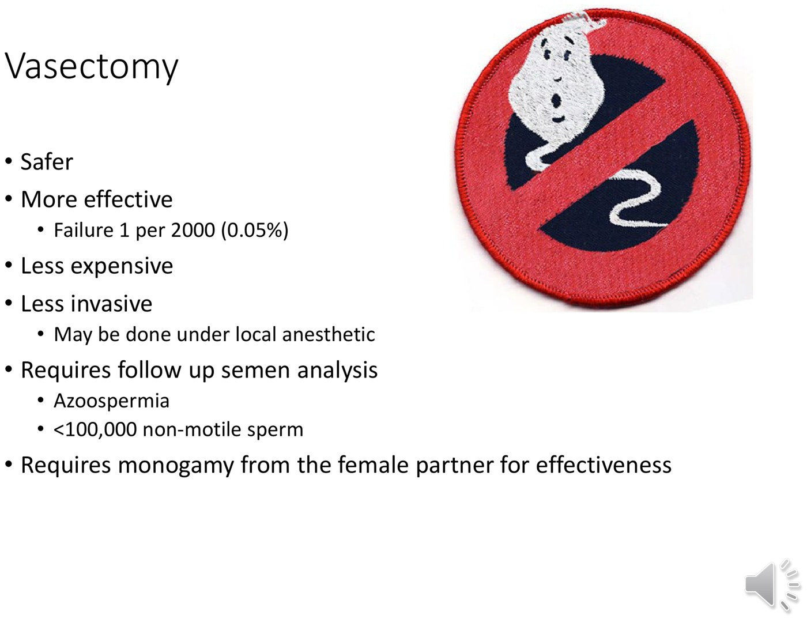
Vasectomy beats tubal ligation on every axis: safer, more effective (1 per 2,000), cheaper, done under local without entering the abdomen. It needs a semen analysis at 3 months; relying on it before that is the commonest cause of failure.- Salpingectomy (removing the tubes) is increasingly done: it adds little time or risk, and about 30% of serous ovarian cancers may start in the fallopian tube, so it is risk-reducing.
- Regret is one of the most common complications, especially when young — but a young patient who understands that it is not reversible, and knows the cost of IVF or reversal, should be able to access it.
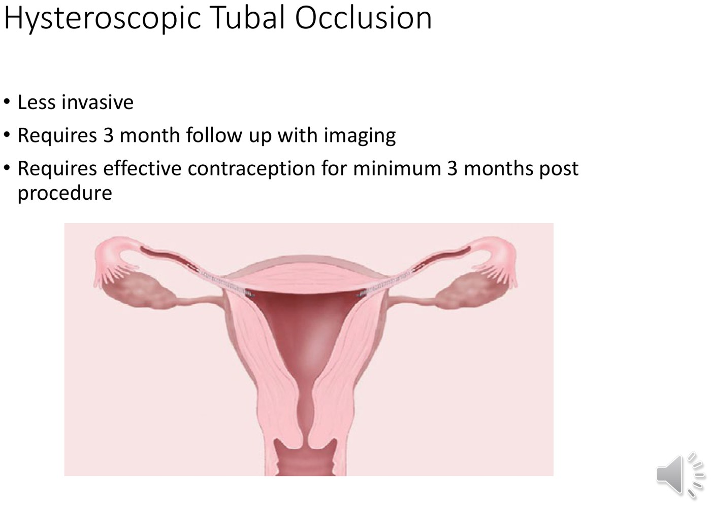
Hormonal Contraception
Progestin-only first, then combined, then the contraindications that decide between them.
The Medical Eligibility Criteria
![Slide titled Medical Eligibility Criteria For Contraceptive Use. Category 1: a condition for which there is no restriction for the use of the contraceptive method. Category 2: a condition for which the advantages of using the method generally outweigh the theoretical or proven risks. Category 3: a condition for which the theoretical or proven risks usually outweigh the advantages. Category 4: a condition that represents an unacceptable health risk if the contraceptive method is used; the method should not be used.](../../../../assets/images/week-4/contraception/mec-categories.jpg)
Progestin-Only Methods
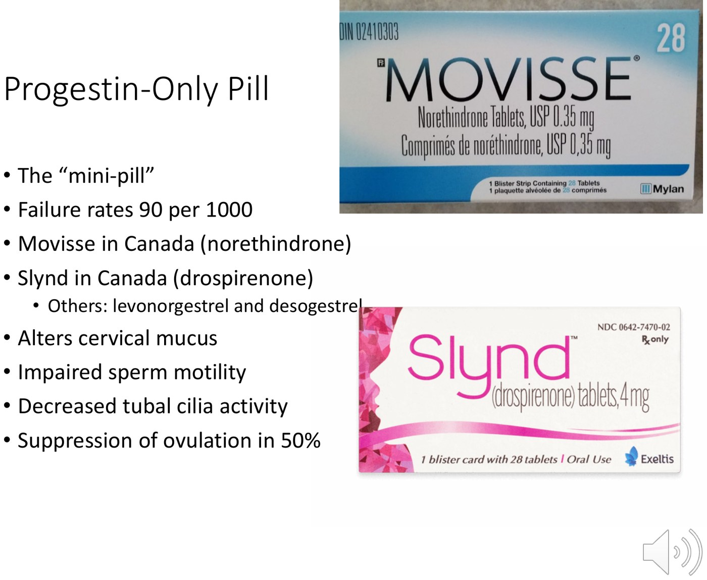
The "mini-pill", taken at the same time every day. Failure 90 per 1,000. In Canada: Movisse (norethindrone) and Slynd (drospirenone). Suppresses ovulation in about 50%.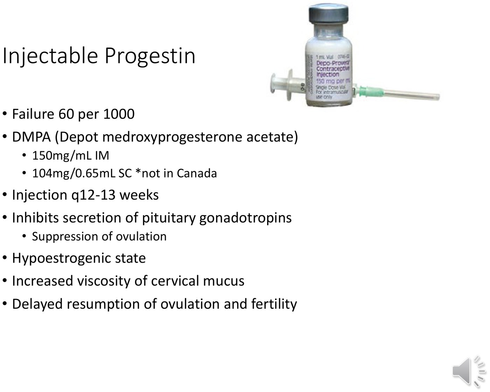
Depo-Provera (DMPA): 150 mg IM every 12–13 weeks (there's enough drug for 14). Failure 60 per 1,000, better than the pill because it doesn't depend on daily use.How progestin-only methods work: thicker cervical mucus, impaired sperm motility, less tubal cilia activity (so the ovum is more likely to undergo apoptosis in transit), and, depending on the method, suppressed ovulation. Because there's no estrogen, they can be used immediately postpartum and post-abortion, and VTE risk isn't an issue.
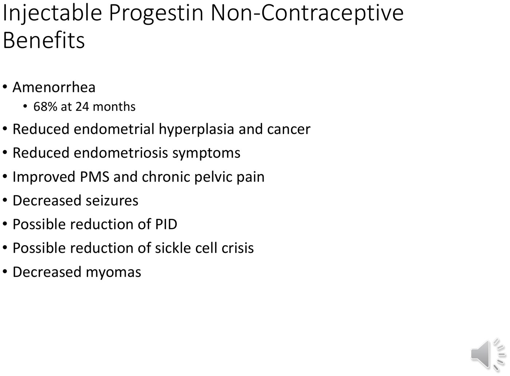
Benefits beyond contraception. Amenorrhea in about 70% by 24 months. Reduced endometrial hyperplasia and cancer, endometriosis symptoms, PMS and chronic pelvic pain, and fewer seizures (it doesn't interfere with anti-epileptics and raises the seizure threshold).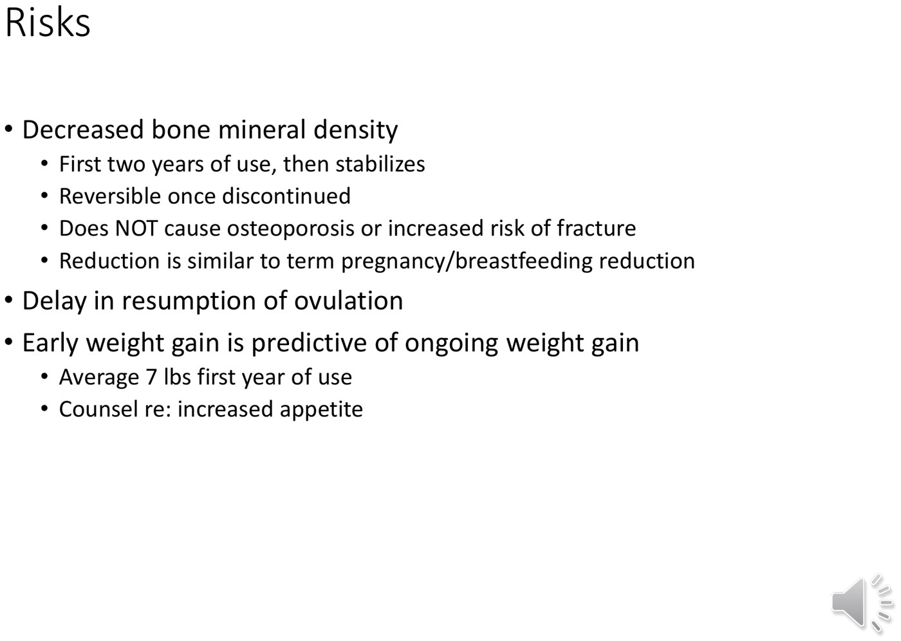
The three things to counsel about. Bone density, the delay in fertility, and weight."You can only use it for 2 years." Not true. Bone mineral density falls in the first two years then stabilizes, the loss is reversible on stopping (up to 98% returns, even in those who used it to menopause), and the size of the drop is similar to what happens in a term pregnancy or while breastfeeding. No fractures or osteoporosis have been attributed to it.
"You need bone density screening on it." Not true either.
What is true: the return of fertility is delayed — an average of 9 months, longer the longer it's been used (the only reversible method where this happens). And Depo is the only contraceptive clinically proven to cause weight gain: about 7 lb in the first year, with early gain predicting more. Counsel that it's an appetite stimulant, so she can get ahead of it.
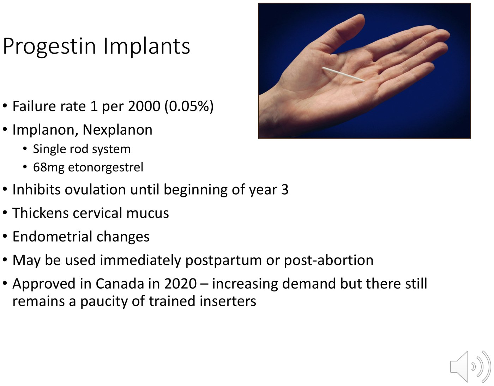
Combined Hormonal Contraception
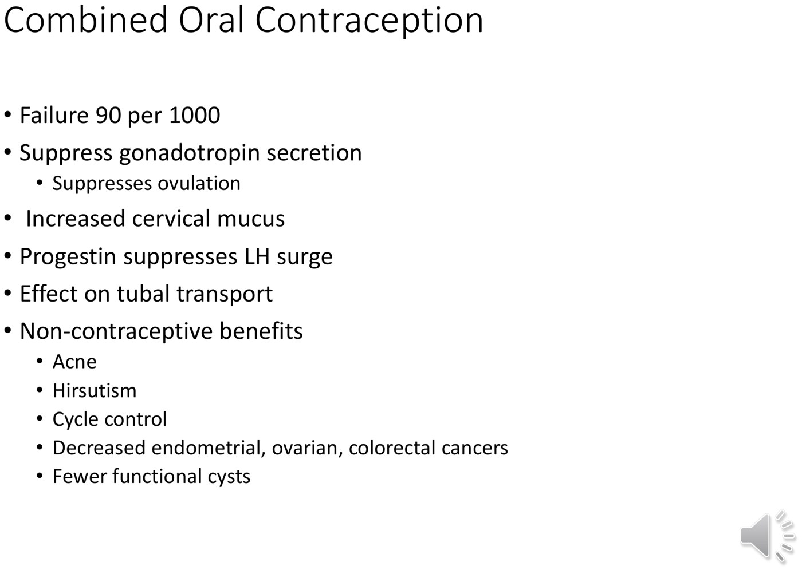
Failure 90 per 1,000 — the same as the progestin-only pill, the patch and the ring. The progestin does the contraception (suppresses the LH surge, thickens mucus); the estrogen mainly controls bleeding.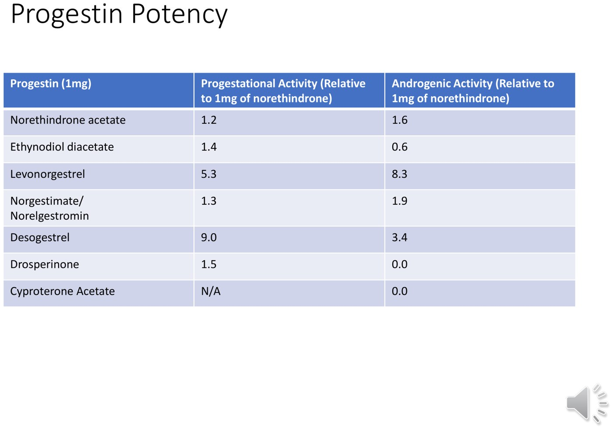
Which progestin, and why it matters. Levonorgestrel is highly androgenic (8.3) so it's a poor choice for acne; drospirenone and cyproterone have zero androgenic activity, so they help it.A piece of history from the lecture: the pill was meant to be progestin-only. The original batch was accidentally contaminated with estrogen; when they made a clean progestin-only version, women reported bloating, breast tenderness and nuisance bleeding — so the estrogen went back in. 16% of Canadian women aged 15–49 use a combined method, and about 44% of those using prescribed contraception use the pill. Continuous or extended use, skipping the hormone-free interval, is safe.
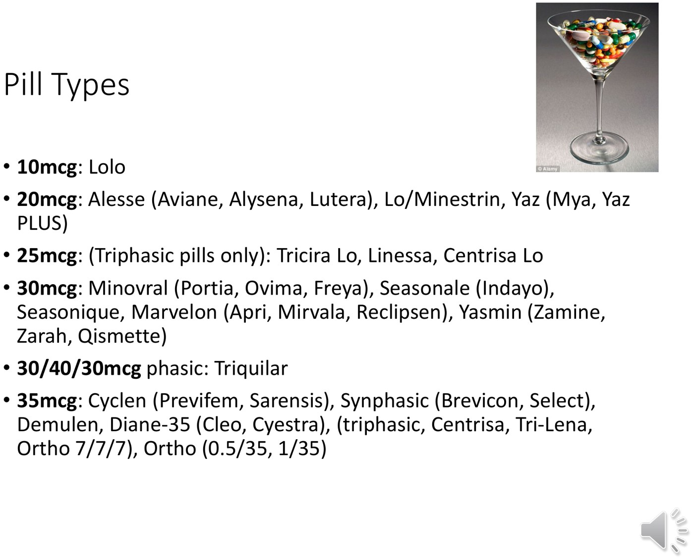
Dose range: 10–35 µg of estrogen — all "low dose" compared with the original 60–70+ µg pills. No study shows 10 µg has less VTE risk than 35 µg: the risk is so low that the trial isn't feasible.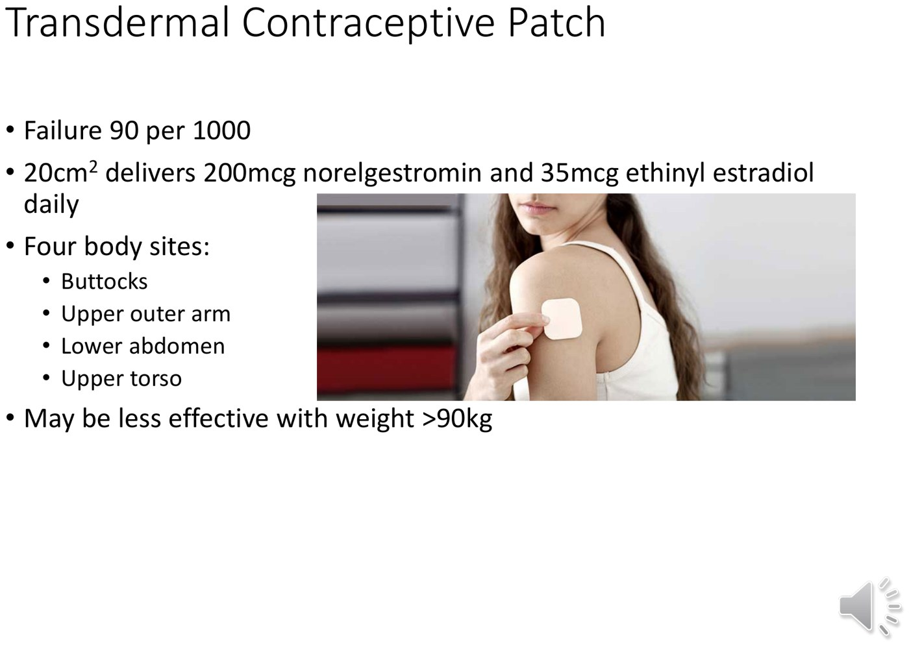
The patch: changed weekly for 3 weeks, then a hormone-free week (or used continuously). Four sites. May be less effective over 90 kg — which is a counselling point, not a ban.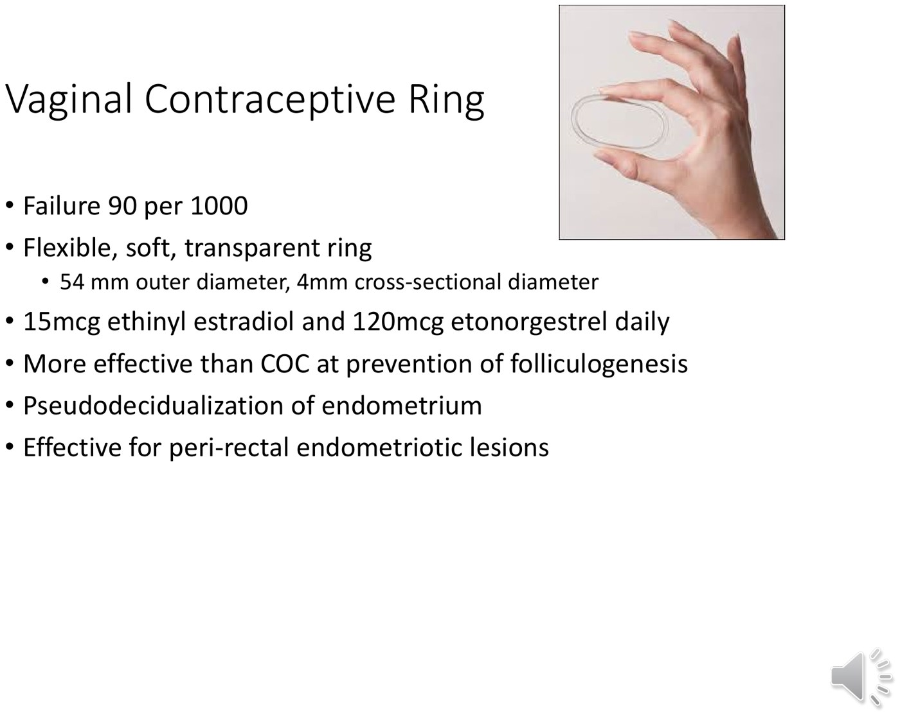
![Slide titled Contraindications listing category 4 conditions for combined hormonal contraception: under 4 weeks postpartum breastfeeding; under 21 days postpartum not breastfeeding; smoker over 35 years with more than 15 cigarettes a day; vascular disease; hypertension systolic 160 or diastolic 100; acute DVT or PE; history of DVT or PE not on anticoagulation with higher risk of recurrence; major surgery with prolonged immobilization; known thrombophilia; current or history of ischemic heart disease; history of stroke; complicated valvular heart disease; systemic lupus erythematosus with positive or unknown antiphospholipid antibodies; migraine with aura; peripartum cardiomyopathy; current breast cancer; severe decompensated cirrhosis; hepatocellular adenoma; malignant hepatoma; complicated solid organ transplantation.](../../../../assets/images/week-4/contraception/chc-contraindications.jpg)
| Problem on the pill | Adjustment |
|---|---|
| Breakthrough bleeding | Higher estrogen dose |
| Acne or hirsutism | Avoid androgenic progestins; use drospirenone or cyproterone |
| PMDD | Yaz (24/4) is the only COC approved for it |
| Mood swings with hormone fluctuation | Avoid triphasic pills; use a monophasic |
| Depression or irritability | Lower progestin potency |
| Headaches | Lower estrogen |
| Endometriosis | Continuous pill or short hormone-free interval; low estrogen, higher progestin/androgenicity |
Intrauterine Contraception & LARCs
The most effective reversible methods, and the ones patients stay on.
Copper IUD vs Hormonal IUS
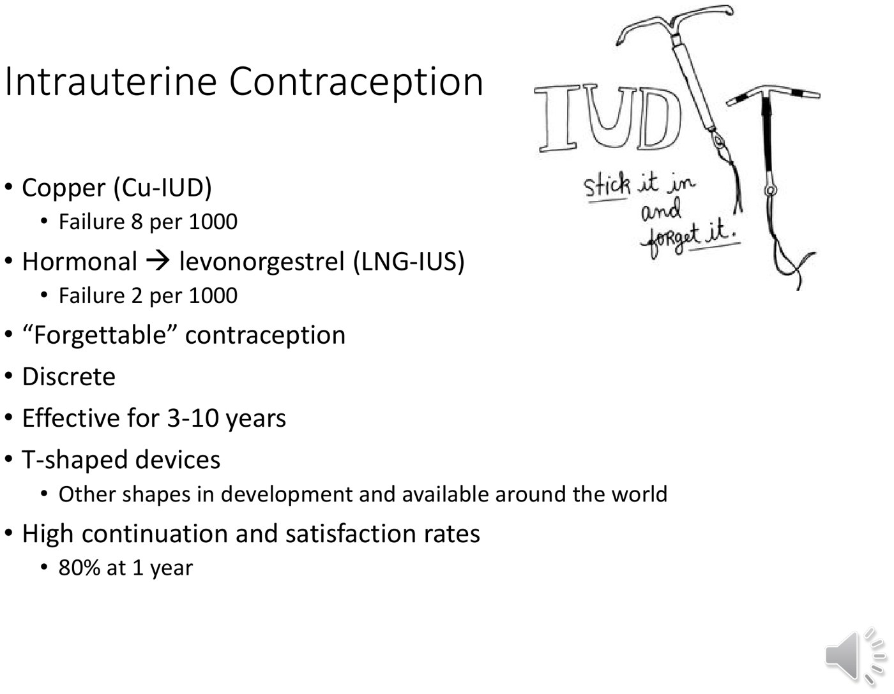
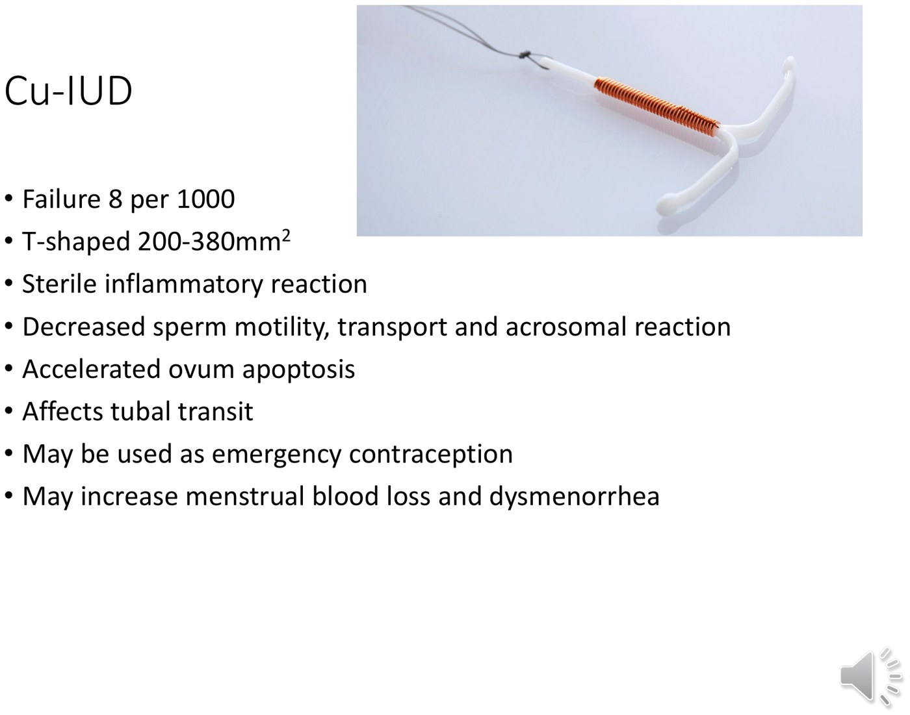
Copper IUD: 8 per 1,000. Copper ions cause a sterile inflammatory reaction that makes the endometrium hostile, bind sperm and impair their motility and the acrosome reaction, and accelerate ovum apoptosis. Downside: heavier, more painful periods. Upside: it doubles as EC.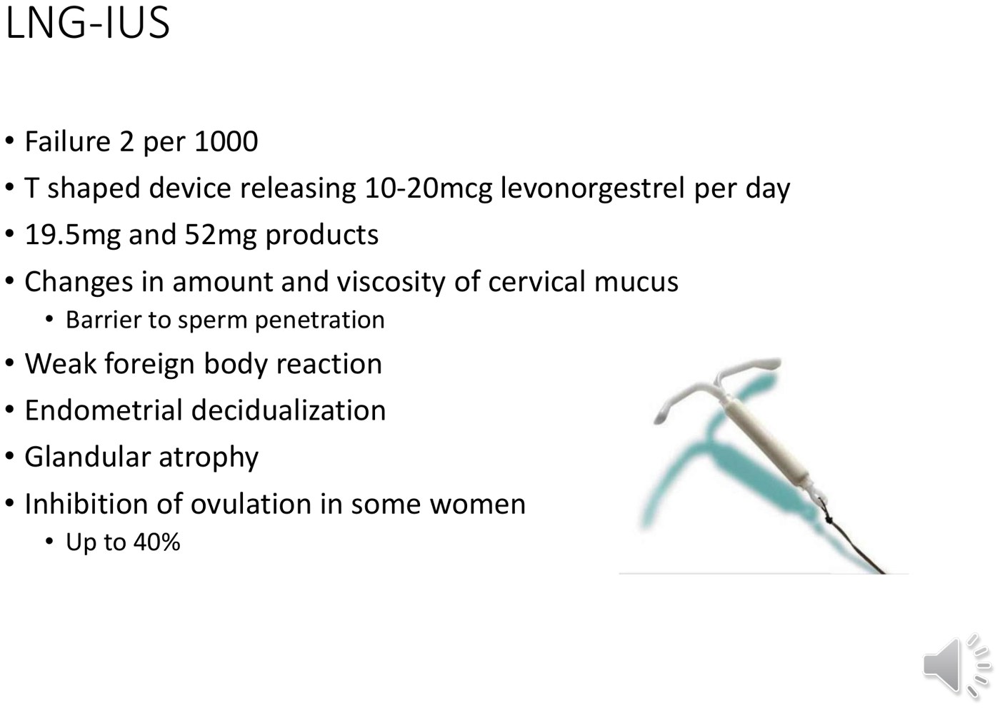
Hormonal IUS: 2 per 1,000. Kyleena (19.5 mg, 5 years) and Mirena (52 mg), which is also indicated for heavy menstrual bleeding. Works mainly through cervical mucus, plus decidualization, glandular atrophy, and ovulation inhibition in up to 40%.Their main mechanisms differ. The IUS works through cervical mucus, so even if it sits low in the uterus it still works. The copper IUD needs copper ions distributed throughout the cavity, so it has to be properly positioned to be fully effective. That is thought to explain much of the 2-vs-8 difference.
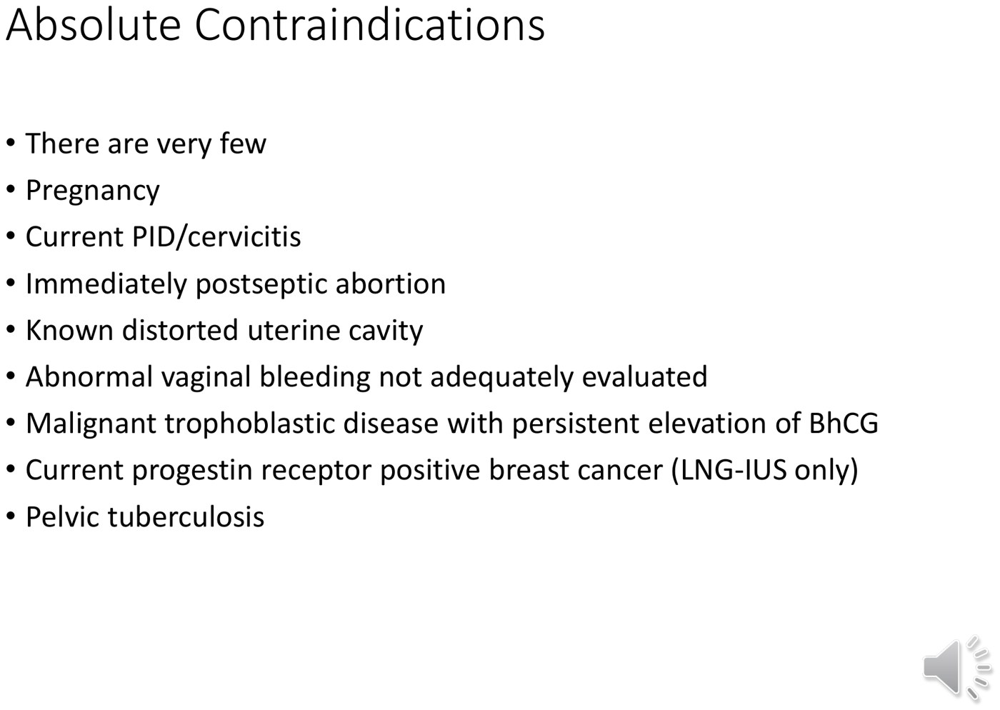
Emergency Contraception
Use it as soon as possible after unprotected intercourse. If the last period is unknown or unreliable, confirm a negative pregnancy test first: EC is not an abortifacient and does not work once pregnant.
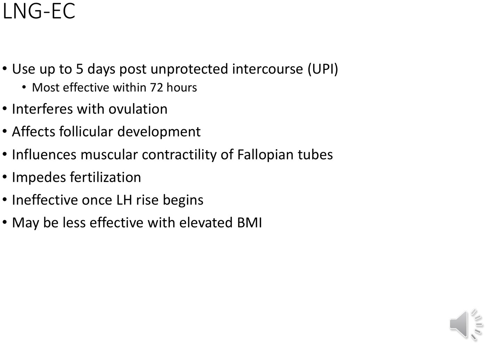
Levonorgestrel 1.5 mg (Plan B): one dose, best within 72 h, usable to 5 days. It delays ovulation by affecting follicular development — so it is useless once the LH rise has begun. Available over the counter.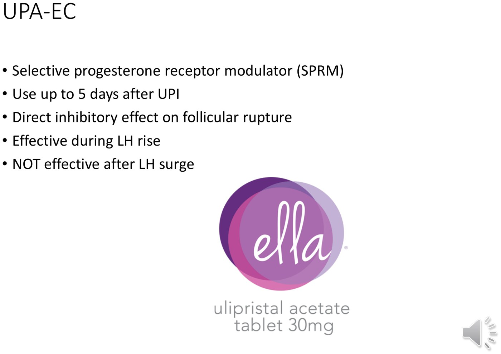
Ulipristal acetate 30 mg (Ella): an SPRM that directly inhibits follicular rupture, so it still works during the LH rise — which makes it better than Plan B, especially on days 4–5. Not effective after the surge. Prescription only, and often not stocked.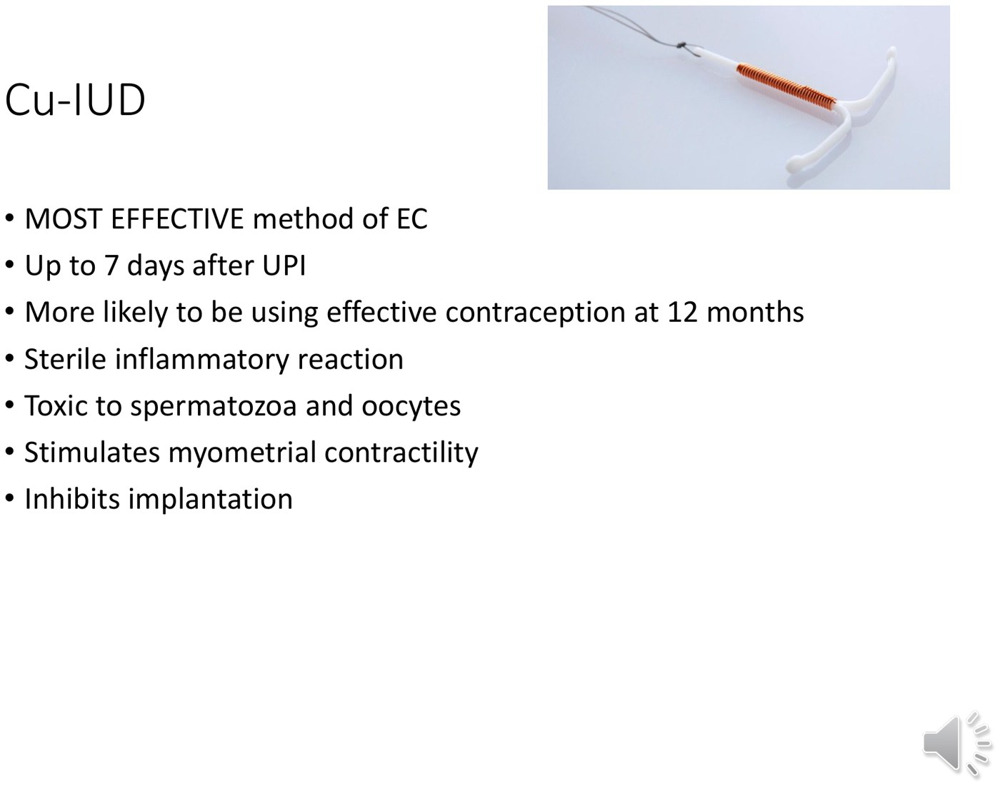
The copper IUD is the most effective EC, works up to 7 days, and leaves her with ongoing contraception: 80% still have it at 12 months.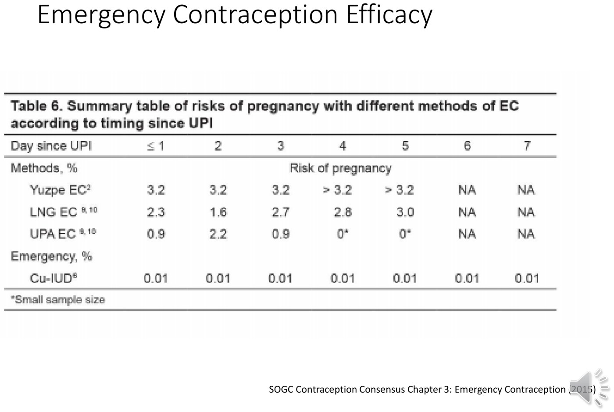
The ranking, by day. Cu-IUD (0.01% at every time point) > ulipristal > levonorgestrel > Yuzpe. The Yuzpe method (ethinyl estradiol 100 µg + levonorgestrel 500 µg, 12 h apart, using ordinary pills) was developed here in London, but causes a lot of nausea and is now a last resort. SOGC consensus, from the lecture.The Contraceptive CHOICE Project
7,486 participants at risk of unintended pregnancy in the Chicago area got proper counselling (30–60 minutes covering effectiveness, side effects, risks and benefits of all methods) and then their method of choice, free, for three years.
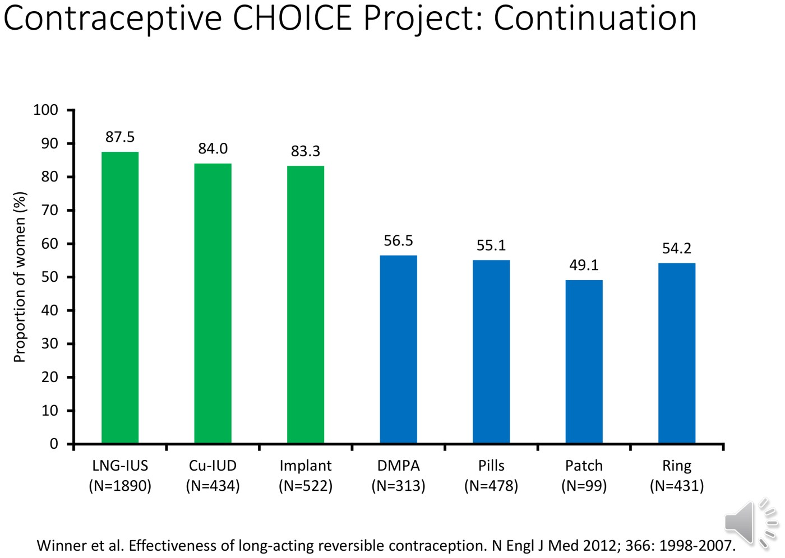
Continuation at 3 years: LARCs 83–88% vs about 50% for Depo, pills, patch and ring.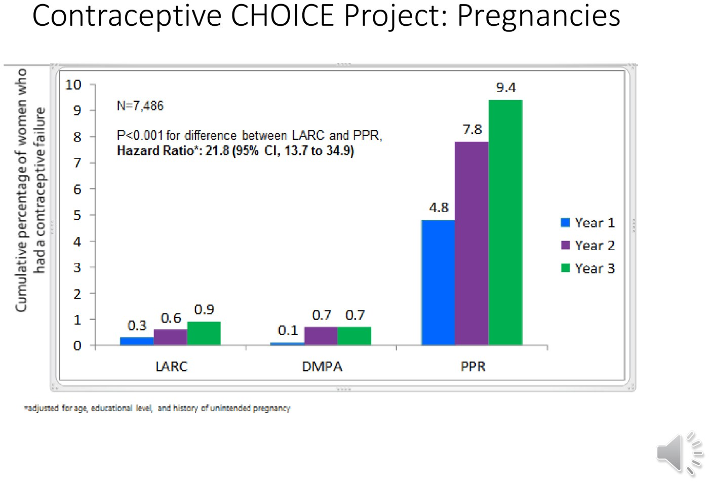
And the failures: under 1% for LARC across three years vs 9.4% for pill/patch/ring. The hazard ratio is 21.8.The lesson: when cost is removed and counselling is accurate, most people choose a LARC, regardless of age or parity. The reasons they usually don't are provider bias, misinformation and cost — all three of which are on us.
The Three Cases
| Case | The issue | What fits |
|---|---|---|
| Clarise, 18, G0 New partner, on condoms. Mother had a DVT after surgery, sister had a PE on the pill. Afraid of weight gain |
Strong family history of VTE in first-degree relatives → possible hereditary thrombophilia (e.g. factor V Leiden). She also names weight as a concern | Avoid estrogen until thrombophilia testing. Avoid Depo (the only method proven to cause weight gain). That leaves the progestin-only pill, either IUD, or the implant — all valid |
| Beth, 41, G2P2 Done childbearing, light regular periods, non-smoker, tired of daily pills, no drug coverage, often goes 2–3 months with nothing |
Cost is the barrier | Copper IUD: only $30–75 and lasts 5–10 years, and her periods are already light. Or permanent contraception, which is covered by OHIP. A hormonal IUS at $350–500 up front won't work for someone who struggles with $25–30 a month |
| Tara, 36, G6T1P1A4L1 PID two years ago, very heavy but predictable periods, 1 pack/day, cannabis and IV drug use, hep C and HIV positive, not compliant with medications, homeless, being trafficked |
Estrogen is absolutely contraindicated (smoking >15/day over 35). Cost, adherence and clinic attendance are all barriers, and she is at very high risk of unintended pregnancy | A LARC. Despite that history there is no contraindication to an IUD: her PID was over 2 years ago, and being immunocompromised is not a barrier. A hormonal IUS also treats her heavy periods (compassionate-supply programs exist through the SOGC). Consider prophylactic STI treatment with same-day insertion after a negative pregnancy test, since she may not return for swab results |
The Summary the Lecture Ends On
- Most women need effective contraception for most of their reproductive life.
- LARCs are highly acceptable and effective and should be offered preferentially, at any age and any parity.
- Encourage condoms as backup and for STI protection — especially here, where London has some of the highest chlamydia rates in the country.
- If she picks a less effective method or none, discuss emergency contraception and how to get it before she needs it.
- Permanent contraception needs a conversation about regret.
- Natural family planning beats no method, and may be the only acceptable option in some cultural or religious contexts.
- Every contraception discussion should also explore future fertility plans and the effect of age on fertility (4.2).
- Counsel with typical-use failure rates.
Apps the lecturer recommends: CDC MEC (medical eligibility for any condition), IUC Expert (IUD troubleshooting and myth-busting), Health Canada STI (including treatments), and a pregnancy wheel.
Built from Dr. Stephanie Black's "Contraception Options" slide deck and her 76-minute recorded lecture, including her conflict-of-interest disclosure (Bayer advisory board, intrauterine contraception). All figures are slides from the deck, which draws on the SOGC contraception consensus, the SOGC "It's a Plan" effectiveness chart, and Winner et al., NEJM 2012 for the CHOICE project. Failure rates throughout are quoted as typical use, per 1,000 women in the first year, as the lecture insists. The three teaching cases are the lecture's own. Abortion care and post-abortion contraception are in 4.1; the pharmacology of these hormones is in 4.4.